Тактическая подготовка
Бой как понятие, его составляющие (удар, огонь, маневр). Черты современного общевойскового боя и требования, предъявляемые к нему. Основные понятия, определения и термины по тактической подготовке. Общие обязанности военнослужащего в бою.
Тема 2. Передвижение солдата на поле боя Передвижение на поле боя.
Приемы и способы передвижения на поле боя (ускоренным шагом, бегом, перебежками и переползанием). Их применение в зависимости от интенсивности огня противника и рельефа местности.
Тренировка в выполнении сигналов и команд, подаваемых днем и ночью.
Тема 3. Действия военнослужащего в бою. Подготовка обороны. Действия при отражении атаки противника.
Подготовка к ведению огня днем (ночью): изучение местности; определение расстояний до ориентиров; закрытых (не поражаемых) участков местности и вероятных путей движения противника. Наблюдение за противником и местностью днем (ночью), доклад командиру о результатах наблюдения.
Действия солдата во время огневой подготовки наступления противника, с получением сигнала о непосредственной угрозе применения противником оружия массового поражения.
Ведение огня по противнику по мере его подхода к переднему краю обороны, смена места для стрельбы. Борьба с танками противника при преодолении заграждений и непосредственно перед позицией.
Уничтожение противника перед позицией и при бое в траншее, взаимное прикрытие огнем в ходе боя, само- и взаимопомощь при ранении.
Действия при совершении марша в пешем порядке. Подготовка снаряжения и оружия к движению. Ведение наблюдения в ходе движения и доклад командиру об изменениях обстановки.
Действия при обнаружении инженерных заграждений; при встрече с группами противника и нападении его из засады; при воздушных налетах; при обнаружении очагов пожаров, участков заражений (разрушений).
Выбор, оборудование, маскировка и занятие основной и запасной позиции. Ведение наблюдения.
Несение службы патрульными. Действия при пропуске военнослужащих и обнаружении противника.
Тема 5. Действия солдата при подъеме по тревоге
Тренировка в составе штатного взвода и роты. Выполнение личным составом подразделения обязанностей согласно боевого расчета по тревоге. Боевая экипировка.
Комплексная тренировка в составе роты. Отработка вопросов сбора роты и выполнения функциональных обязанностей согласно боевому расчету.
Тема 1. Основы общевойскового боя, способы его ведения и средства вооруженной борьбы. Бой, его составляющие, черты и требования, предъявляемые к нему. Основные понятия, определения и термины по тактической подготовке. Сигналы управления и оповещения. Меры безопасности.
Бой как понятие, его составляющие (удар, огонь, маневр).
Бой - основная форма тактических действий, представляет собой организованные и согласованные по цели, месту и времени удары, огонь и маневр соединений, частей и подразделений в целях уничтожения (разгрома) противника, отражения его ударов и выполнения других тактических задач в ограниченном районе в течение короткого времени.
Удар - одновременное и кратковременное поражение группировок войск и объектов противника путем мощного воздействия на них имеющимися средствами поражения или наступле-нием войск (удар войсками). Удары могут быть: в зависимости от применяемого оружия - ядерные и огневые; по средствам доставки - ракетные и авиационные; по количеству участвующих средств и поражаемых объектов - массированные, сосредоточенные, группо-вые и одиночные.
Огонь - стрельба из различных видов оружия и пуск ракет в обычном снаряжении на поражение целей или для выполнения других задач; основной способ уничтожения противника в общевойсковом бою. Он различается по: решаемым тактическим задачам - на уничтожение, подавление, изнурение, разрушение, задымление (ослепление) и другие; видам оружия - из стрелкового оружия, гранатометов, огнеметов, боевых машин пехоты (бронетранспортеров), танков, артиллерии, противотанковых ракетных комплексов, зенитных средств и других; способам ведения - прямой, полупрямой наводкой, с закрытых огневых позиций и другой; напряженности - одиночными выстрелами, короткими или длинными очередями, непре-рывный, кинжальный, беглый, методический, залповый и другие; направлению стрельбы - фронтальный, фланговый, перекрестный; способам стрельбы - с места, с остановки (с корот-кой остановки), с ходу, с борта, с рассеиванием по фронту, с рассеиванием в глубину, по площади и другой; видам огня - по отдельной цели, сосредоточенный, заградительный, мно-гослойный и многоярусный.
Маневр - организованное передвижение войск в ходе выполнения боевой задачи в целях занятия выгодного положения по отношению к противнику и создания необходимой группировки сил и средств, а также переноса или перенацеливания (массирования, распределения) ударов и огня для наиболее эффективного поражения важнейших группировок и объектов противника. Видами маневра подразделениями в бою являются: охват, обход, отход и смена позиций.
Охват - маневр, осуществляемый в целях выхода во фланг (фланги) противнику. Обход - более глубокий маневр, совершаемый для выхода в тыл противнику. Охват и обход осуществляются в тактическом и огневом взаимодействии с подразделениями, наступающими с фронта.
Отход и смена позиций - маневр, осуществляемый подразделениями (огневыми средствами) в целях выхода из-под ударов превосходящего противника, воспрещения окружения, занятия более выгодного положения для последующих действий.
Маневр огнем заключается в одновременном или последовательном его сосредоточении по важнейшим целям противника или в распределении для поражения нескольких целей, а также в перенацеливании на новые объекты.
Бой может быть общевойсковым, противовоздушным, воздушным и морским.
Общевойсковой бой ведется объединенными усилиями соединений, частей и подразделений Сухопутных войск, Военновоздушных сил, Воздушно-десантных войск, а на приморском направлении и силами Военно-Морского Флота. В ходе общевойскового боя соединения (части, подразделения) могут решать боевые задачи совместно с войсками, воинскими формированиями и органами других войск Российской Федерации.
Черты современного общевойскового боя и требования предъявляемые к нему.
Характерными чертами современного общевойскового боя являются: высокая напряженность, скоротечность и динамичность боевых действий, их наземно-воздушный характер, одновременное мощное огневое и радиоэлектронное воздействие на всю глубину построения сторон, применение разнообразных способов выполнения боевых задач, сложная тактическая обстановка.
Напряженность боевых действий обусловлена стремлением и возможностями противоборствующих сторон вести активные боевые действия с решительными целями; применением в бою большого количества сложных систем оружия большой разрушительной силы; массовыми потерями людей, вооружения, техники и материальных средств; большим психологическим воздействием на людей последствий применения качественного нового оружия, а так же целенаправленной деятельностью сторон в целях подавления воли противника к дальнейшему сопротивлению; непрерывностью ведения боевых действий днем и ночью, часто по разобщенным направлениям.
В этих условиях достижение победы в бою потребует от наших войск высокой боевой выучки и моральнопсихологической подготовки, искусных действий и максимального напряжения физических и духовных сил.
Скоротечность боя обусловливается мощью современных средств поражения, их быстродействием, способностью в короткие сроки наносить решительное поражение противнику, с ходу стремительно атаковать и завершись его разгром вслед за ядерными и огневыми ударами, в высоких темпах развивать успех в глубину.
В условиях скоротечных боевых действий, как никогда, остро встает вопрос о борьбе за выигрыш во времени, об умении офицеров быстро оценивать обстановку и ставить задачи на основе высокой тактической подготовки и твердых навыков управления войсками.
Динамичность современного боя является результатом применения мощных средств пора-жения, роста подвижности общевойсковых частей и соединений, благодаря их полной моторизации и высокой степени механизации, а так же результатом отсутствия сплошного фронта в обороне и наступлении. Отсутствие сплошного фронта, значительное рассредоточение войск, наличие открытых флангов и больших промежутков все это увеличивает динамичность боя, способствует проведению смелых охватов, глубоких обходов, стремительному выходу на фланги и в тыл противнику и нанесению внезапных решительных ударов с разных направлений.
Общевойсковой бой требует от участвующих в нем подразделений непрерывного ведения разведки, умелого применения вооружения и военной техники, средств защиты и маскировки, высокой подвижности и организованности, полного напряжения всех моральных и физических сил, непреклонной воли к победе, железной дисциплины и сплоченности.
Общевойсковой бой может вестись с применением только обычного оружия или с применением ядерного оружия, других средств массового поражения, а также оружия, основанного на использовании новых физических принципов.
Обычное оружие составляют все огневые и ударные средства, применяющие артиллерийские, авиационные, стрелковые и инженерные боеприпасы, ракеты в обычном снаряжении, боеприпасы объемного взрыва (термобарические), зажигательные боеприпасы и смеси. Наиболее высокой эффективностью обладают высокоточные системы обычного оружия.
Основой ведения боя с применением только обычного оружия является последовательный разгром подразделений противника. При этом важное значение будут иметь их надежное огневое и радиоэлектронное поражение с одновременным воздействием на его резервы и важные объекты в глубине, своевременное сосредоточение сил и средств для выполнения поставленных задач.
Ядерное оружие является наиболее мощным средством поражения противника. Оно включает все виды (типы) ядерных боеприпасов со средствами их доставки (носителями ядерных боеприпасов).
К оружию, основанному на использовании новых физических принципов, относится лазерное, ускорительное, сверхвысокочастотное, радиоволновое и другое.
Основные понятия, определения и термины по тактической подготовке.
Российское военное искусство как научная теория разделяется на три составные части - стратегию, оперативное искусство и тактику.
Такое деление обусловлено специфическими особенностями ведения вооруженной борьбы различных масштабов. Оно позволяет каждой части военного искусства конкретно и целеустремленно исследовать область явлений, относящихся к ее предмету.
Стратегия - составная часть военного искусства, его высшая область, охватывающая теорию и практику подготовки страны и ВС к войне, планирование и ведение войны и стратегических операций.
Оперативное искусство - составная часть военного искусства, охватывающая теорию и практику подготовки и ведения совместных и самостоятельных операций (боевых действий) объединениями видов ВС.
Тактика - составная часть военного искусства, охватывающая теорию и практику подготовки и ведения боя подразделениями, частями и соединениями различных видов ВС, родов войск (сил) и специальных войск.
Боевые действия - организованные действия объединений, соединений и частей при выполнении поставленных задач с применением различных форм и способов действий.
Бой - основная форма тактических действий, представляет собой организованные и согласованные по цели, месту и времени удары, огонь и маневр соединений, частей и подразделений в целях уничтожения (разгрома) противника, отражения его ударов и выполнения других тактических задач в ограниченном районе в течение короткого времени.
Цель боя - уничтожение или пленение живой силы противника, уничтожение или захват его вооружения, боевой техники и подавление способности к дальнейшему сопротивлению.
Каждый солдат, сержант и офицер должен проникнуться непоколебимой решительностью уничтожить врага, выполнить боевую задачу во что бы то ни стало, не взирая ни на какие трудности и даже угрозу самой жизни. Командир обязан внушить эту решимость всем подчиненным. Этого требуют интересы защиты национальной независимости Родины.
Общевойсковой бой ведется объединенными усилиями всех участвующих в нем войск с применением танков, БМП (бронетранспортеров БТР), артиллерии, войсковой ПВО и армейской авиации. Участвующие в бою подразделения и части всех родов войск взаимодействуют с частями ВВС, а на приморских направлениях - с силами и средствами ВМФ. В ходе общевойскового боя соединения (части, подразделения) могут решать боевые задачи совместно с войсками, воинскими формированиями и органами других войск Российской Федерации. Общевойсковой бой может вестись с применением только обычного оружия или с применением ЯО, других средств массового поражения, а также оружия, основанного на использовании новых физических принципов.
Общевойсковой бой в зависимости от выполняемых задач и способов их решения подразделяется на оборону, наступление и встречный бой.
Оборона - вид боя, который имеет целью отразить наступление (атаку) превосходящих сил противника, нанести ему максимальные потери, удержать опорный пункт (позицию, объект) и тем самым создать благоприятные условия для последующих действий. Сущность обороны заключается в последовательном выполнении ряда тактических задач, основными из которых являются: занятие и построение обороны; уничтожение подразделений противника при их развертывании и переходе в атаку; отражение атаки его подразделений и удержание занимаемых опорных пунктов (позиций); уничтожение (разгром) подразделений противника, ворвавшихся на передний край и вклинившихся в оборону.
Наступление - основной вид боевых действий, проводимый в целях разгрома противостоящего противника, овладения назначенным объектом и создания условий для последующих действий. Сущность наступления состоит в том, что наступающие войска поражают противника всеми имеющимися огневыми средствами и, используя достигнутые результаты, решительно атакуют, стремительно продвигаются в глубину его расположения, захватывают и уничтожают живую силу, вооружение, боевую технику и овладевают занимаемой противником территорией.
Наступление на суше в зависимости от обстановки и поставленных задач может вестись на обороняющегося, наступающего (встречный бой) или отходящего противника (преследование). Переход в наступление может осуществляться с выдвижением из глубины или из положения непосредственного соприкосновения с ним. В ходе наступления производится огневое поражение противника, включающее этапы огневой подготовки атаки, огневой поддержки атаки и огневого сопровождения наступления войск в глубине обороны противника приданными и поддерживающими подразделениями.
Встречный бой - это такой вид боевых действий, когда обе стороны стремятся выполнить свои задачи наступлением. Он может возникнуть при развертывании с марша, в наступлении и обороне.
Виды общевойскового боя тесно связаны между собой. В ходе боевых действий мотострелковые и танковые подразделения в зависимости от обстановки, укомплектованности, поставленных задач могут переходить от одного вида боя к другому.
Каждый вид боя имеет свои особенности. Вместе с тем им присущи общие черты, характеризующие современный бой: мощный огонь, решительность, маневренность, напряженность и скоротечность, быстрое и резкое изменение обстановки, разнообразие применяемых способов их ведения, развертывание боевых действий на земле, в море и воздухе, на широком фронте, на большую глубину, ведение их в высоком темпе.
Воздушный бой - организованное вооруженное противостояние летчиков (самолетов, экипажей), авиационных подразделений и частей в воздухе с целью уничтожения воздушного противника и отражения его атак. Включает в себя различные фигуры авиационного пилотажа.
Удар - одновременное и кратковременное поражение группировок войск и объектов противника за счет мощного воздействия на них имеющимися средствами поражения или наступления войск (удар войсками). Удары могут быть различными: в зависимости от применяемого оружия - ядерные и огневые; по средствам доставки - ракетные и авиационные; по количеству участвующих средств и поражаемых объектов - массированные, сосредоточенные, групповые и одиночные.
Огонь - стрельба из различных видов оружия и пуск ракет в обычном снаряжении на поражение целей или для выполнения других задач; основной способ уничтожения противника в общевойсковом бою. Он различается по следующим признакам: решаемым тактическим задачам - на уничтожение, подавление, изнурение, разрушение, задымление (ослепление) и др.; видам оружия -из стрелкового оружия, гранатометов, огнеметов, БМП (БТР), танков, артиллерии, ПРК, ЗРК и др.; способам ведения - прямой, полупрямой наводкой, с закрытых огневых позиций и др.; напряженности - одиночными выстрелами, короткими или длинными очередями, непрерывный, кинжальный, беглый, методический, залповый и др.; направлению стрельбы - фронтальный, фланговый, перекрестный; способам стрельбы - с места, с остановки (с короткой остановки), с ходу, с борта, с рассеиванием по фронту, с рассеиванием в глубину, по площади и др.; видам огня - по отдельной цели, сосредоточенный, заградительный, многослойный и многоярусный.
Кинжальный огонь - огонь пулеметов, орудий, танков, самоходных артиллерийских установок, открываемый внезапно, с близких расстояний в одном, заранее подготовленном направлении. Готовится, как правило, в обороне замаскированных позиций, во фланг наступающему противнику и ведется с предельным напряжением.
Беглый огонь - способ ведения огня, при котором орудие, взвод или батарея с максимальной скорострельностью без нарушения установленного для данной системы режима огня и не в ущерб точности наводки поражает живую силу и огневые средства противника. Боевые машины реактивной артиллерии беглый огонь не ведут.
Методический огонь - вид артиллерийского огня, применяемый для поддержания цели (объекта) в подавленном состоянии и изнурения противника. Ведется из артиллерийских орудий и минометов между огневыми налетами и самостоятельно. При ведении методического огня устанавливаются количество снарядов (мин, патронов) на единицу оружия и темп огня (промежутки времени между очередными выстрелами), который значительно медленнее, чем при огневых налетах.
Залповый огонь - артиллерийский огонь такого характера, когда все орудия, назначенные для стрельбы, производят одновременно по специальному сигналу выстрел и, продолжая заряжание и наводку, ждут нового сигнала.
Заградительный огонь - вид артиллерийского огня, применяемый внезапно для отражения атак и контратак пехоты и танков противника на заранее намеченных и, как правило, пристрелянных рубежах (участках). По направлению относительно фронта своих подразделений заградительный огонь делится на фронтальный и фланговый. Удаление ближайшей границы заградительного огня от своих подразделений, находящихся вне укрытий, гарантирует безопасность своих войск. Глубина участков заградительного огня достигает обычно 150-200 м. При выходе противника с участка заградительного огня огонь переносится на следующий рубеж. Для уничтожения воздушных целей заградительный огонь может применяться зенитной артиллерией и зенитными пулеметами.
Огневое поражение противника - согласованное огневое воздействие по противнику назначенными силами и средствами поражения обычными и зажигательными боеприпасами в интересах выполнения тактических задач и достижения целей боя.
Цель огневого поражения заключается в снижении боевого потенциала (боевых возможностей) противостоящих подразделений противника до уровня, обеспечивающего гарантированное выполнение поставленных задач подразделениями с сохранением своей боеспособности.
Атака - представляет собой сочетание огня и движения мотострелковых и танковых подразделений для завершения разгрома противника в бою на близкой дистанции. Основным элементом атаки является интенсивный огонь из всех средств с ходу и с коротких остановок. Сила атаки определяется, прежде всего, мощностью огня подразделений.
Маневр - организованное передвижение войск в ходе выполнения боевой задачи в целях занятия выгодного положения по отношению к противнику и создания необходимой группировки сил и средств, а также перенос или перенацеливание (массирование, распределение) ударов и огня для наиболее эффективного поражения важнейших группировок и объектов противника. Видами маневра силами и средствами взвода (отделения) в бою являются: охват, обход, отход и смена позиций.
Обычное оружие составляют все огневые и ударные средства, применяющие артиллерийские, авиационные, стрелковые и инженерные боеприпасы объемного взрыва (термобарического), зажигательные боеприпасы и смеси. Наиболее высокой эффективностью обладают высокоточные системы обычного оружия.
Основой ведения боя с применением только обычного оружия является последовательный разгром подразделения противника.
Ядерное оружие является наиболее мощным средством поражения противника.
К оружию, основанному на использовании новых физических принципов, относится лазерное, ускорительное, сверхвысокоточное, радиоволновое и др.
Маневр силами и средствами мотострелкового взвода - организованное передвижение войск в ходе выполнения боевой задачи. Производится в целях занятия выгодного положения по отношению к противнику и создания необходимой группировки сил и средств; переноса или перенацеливания (массирования, распределения) ударов и огня для наиболее эффективного поражения важнейших группировок и объектов противника; для ведения огня по наиболее уязвимому месту в боевом порядке противника или для нанесения удара ему во фланг и тыл, а в случае необходимости - для выхода из-под огня или удара превосходящих сил противника. Для его осуществления используются открытые фланги, промежутки в боевых порядках, складки местности, скрытые подступы, дымы, траншеи и ходы сообщения. Видами этого маневра являются охват, обход, их сочетание, отход и смена позиций.
Обход - глубокий маневр, совершаемый в целях выхода для удара по противнику с тыла.
Охват - маневр, осуществляемый в целях выхода мотострелкового взвода во фланг (фланги) противнику.
Охват и обход осуществляются в тактическом и огневом взаимодействии с подразделениями, наступающими с фронта.
Отход и смена позиций - маневр, осуществляемый подразделениями (огневыми средствами) в целях выхода из -под ударов превосходящего противника, воспрещения окружения, занятия более выгодного положения для последующих действий.
Маневр должен быть простым, проводиться быстро, скрытно и внезапно для противника.
Маневр огнем применяется для более эффективного поражения противника. Он заключается в одновременном или последовательном сосредоточении огня взвода по важнейшим целям противника или в распределении для поражения нескольких целей, а также в перенацеливании на новые объекты.
Общие обязанности военнослужащего в бою.
Каждый военнослужащий должен в совершенстве знать и содержать в постоянной боевой готовности свое оружие и боевую технику, мастерски владеть ими и умело применять, быть в готовности заменить выбывшего из строя товарища.
Каждый военнослужащий обязан:
знать способы и приемы действий в бою, иметь отработанные до автоматизма навыки действий с оружием (при вооружении боевой машины) на поле боя в различных условиях обстановки;
знать и понимать полученную задачу;
знать сигналы управления, взаимодействия, оповещения и порядок действий по ним;
уметь вести разведку противника и местности, при выполнении боевой задачи постоянно вести наблюдение, эффективно применять оружие (вооружение боевой машины), своевременно обнаруживать и поражать противника;
уметь правильно выбирать и оборудовать огневую позицию (место для стрельбы), использовать защитные и маскирующие свойства местности и боевых машин для противодействия огню противника;
знать размеры, объем, последовательность и сроки оборудования фортификационных сооружений; уметь быстро оборудовать окопы и укрытия, в том числе с применением взрывчатых веществ, осуществлять маскировку;
стойко и упорно действовать в обороне, смело и решительно - в наступлении; проявлять храбрость, инициативу и находчивость в бою; оказывать помощь товарищу;
уметь вести огонь по низколетящим самолетам, вертолетам и другим воздушным целям противника из стрелкового оружия;
знать способы защиты от оружия массового поражения и высокоточного оружия противника; умело использовать местность, средства индивидуальной защиты и защитные свойства боевых машин; преодолевать заграждения, препятствия и зоны заражения; устанавливать и обезвреживать противотанковые и противопехотные мины; проводить специальную обработку;
не оставлять без разрешения командира своего места в бою; при ранении или поражении радиоактивными, отравляющими веществами, биологическими средствами, а также зажигательным оружием принимать необходимые меры само- и взаимопомощи и продолжать выполнение полученной задачи;
уметь готовить вооружение и боеприпасы к боевому применению, быстро снаряжать патронами обоймы, магазины, ленты; следить за расходом боеприпасов и заправкой боевой машины горючим, своевременно докладывать своему командиру об израсходы-вании 0,5 и 0,75 запаса ракет (боеприпасов) и заправки горючего; при повреждении боевой машины принимать меры по ее восстановлению.
Каждый сержант и солдат обязаны защищать командира в бою, в случае его ранения или гибели смело брать командование подразделением на себя.
Организация и вооружение МСР (МСВ, МСО).
Современный бой ведется объединенным взаимодействием всех сил и средств различных родов войск. Это соответственно находит отражение и в организационной структуре мотострелковых и танковых частей.
Мотострелковый батальон (МСБ) – основное общевойсковое подразделение. Он организационно входит в состав мотострелковой (танковой) бригады (полка).
Мотострелковая рота (МСР) – тактическое подразделение, входящее в состав батальона.
Мотострелковые (танковые) подразделения с учетом условий театра военных действий, характера вооружения имеют различную структуру по численности личного состава, наличию вооружения, техники и приданных подразделений, в том числе из других родов войск.
Наибольшим “количественным весом” в Сухопутных войсках обладают мотострелковые и танковые батальоны мотострелковых и танковых бригад и полков. В МСБ входят командование, штаб, боевые подразделения и подразделения обеспечения.
 БАТАЛЬОНА_files/snimok-ekrana-2015-04-08-v-14-50-16-1-1120x0.png) В МСБ входят командование, штаб, боевые подразделения и подразделения обеспечения. Командование составляют командир, заместитель командира, заместитель по работе с личным составом, заместитель по вооружению, заместитель по тылу, помощник командира по артиллерии. В штаб входят начальник штаба, заместитель начальника штаба, начальник связи (обычно командир взвода связи), инструктор и писарь. Для командования и штаба предназначены две БМП или два БТР.
В МСБ входят командование, штаб, боевые подразделения и подразделения обеспечения. Командование составляют командир, заместитель командира, заместитель по работе с личным составом, заместитель по вооружению, заместитель по тылу, помощник командира по артиллерии. В штаб входят начальник штаба, заместитель начальника штаба, начальник связи (обычно командир взвода связи), инструктор и писарь. Для командования и штаба предназначены две БМП или два БТР.
МСБ на БМП и на БТР имеют почти одинаковую организационную структуру и отличаются лишь количеством основного вооружения. В батальоне три мотострелковые роты, минометная батарея, а также взводы гранатометный, связи, медицинский и обеспечения. Дополнительно располагает противотанковым взводом МСБ на БТР (СПГ-9 – 3 единицы, ПТРК “Фагот” – 6 единиц).
В МСБ мотострелковой и танковой бригад на вооружении стоят БМП. Отличие организационной структуры этих батальонов от МСБ на БМП из полковых структур заключается в том, что в их состав дополнительно входят противотанковый взвод (БМП – 3 единицы, ПТРК “Фагот” – 6 единиц), вместо взвода связи – взвод управления (разведывательное отделение, отделение управления начальника штаба, отделение связи), а вместо взвода обеспечения – взвод материального обеспечения и технического обслуживания.
В зависимости от особенностей театра военных действий (северные районы, юг или восток) МСБ может иметь также подразделения ПВО, разведывательные подразделения, а в качестве транспортной базы – автомобили. Различие оснащения батальонов БМП или БТР обуславливают их отличие друг от друга по численности личного состава и вооружения.
МСР на БМП имеет управление, три мотострелковых взвода. В управление входят командир, заместитель по работе с личным составом, старшина, старший механик, санитар-инструктор, командир боевой машины, два наводчика-оператора, старший механик-водитель, оператор радиолокационной станции ближней разведки (СБР).
В управлении роты две БМП.
На БТР в отличие от БМП нет оружия для борьбы с танками, поэтому в мср на БТР включено противотанковое отделение. В нем девять человек, три ПТРК “Метис”. Транспортная база – БТР. В управлении роты восемь человек: командир, помощник по работе с личным составом, старшина, старший техник, санитар-инструктор, старший водитель,
пулеметчик, оператор СБР.
Мотострелковая рота из бригадных структур отличается от мср на БМП полков тем, что в ее составе есть гранатометный взвод: три гранатометных отделения по восемь человек, по одной БМП и по два АГС-17. Всего во взводе 26 человек, БМП – 3 единицы, АГС – 6 единиц.
Мотострелковый взвод (МСВ) на БМП имеет управление и три мотострелковых отделения по восемь человек. В управление взвода входят командир, заместитель командира, снайпер, пулеметчик, номер расчета, стрелок-санитар. Всего во взводе 30 человек, три БМП.
В МСВ на БТР – 32 человека. В двух отделениях этого взвода по девять человек (добавлено по одному стрелку), а одном отделении – восемь.
В МСВ на БМП бригадных структур – 32 человека: в управлении – пять, в отделениях – по девять человек.
Мотострелковое отделение (мсо) может иметь различную структуру и насчитывает 8 – 9 человек. Вариант, включающий восемь мотострелков: командир БМП (БТР), он же наводчик-оператор, старший механик-водитель (механик-водитель), гранатометчик, стрелок-помощник гранатометчика, пулеметчик, старший стрелок, стрелок (во взводе на БТР – снайпер). В отделении одна БМП (БТР).
Личный состав МСО вооружён стрелковым оружием:
командир отделения – автомат АК-74;
наводчик-оператор БМП / наводчик пулемёта БТР – пистолет ПМ ( АК-74 );
водитель-механик БМП / водитель БТР / - пистолет ПМ ( АК-74 );
снайпер – снайперская винтовка Драгунова ( СВД );
старший стрелок – автомат АК-74;
пулемётчик – пулемёт РПК-74;
стрелок-гранатомётчик – ручной противотанковый гранатомёт РПГ-7;
помощник стрелка-гранатомётчика – автомат АК-74;
стрелок – автомат АК-74.
Кроме основного стрелкового оружия личный состав МСО обеспечивается ручными осколочными гранатами : наступательными - РГД-5, РГН; оборонительными - Ф-1, РГО, могут укомплектовываться ручными кумулятивными гранатами ( противотанковыми ) - РКГ-3.
В боевое снаряжение также входит: фильтрующий противогаз ( ОВП, ГП-7), общевойсковой защитный комплект ( ОЗК ), каска, бронежилет, малая сапёрная лопатка, аптечка индивидуальная ( АИ-2 ), индивидуальный противохимический пакет ( ИПП-10 ), пакет перевязочный индивидуальный ( ППИ ).


Сигналы управления и оповещения, применяемые при подготовке и в ходе боя, порядок их подачи различными способами.
Командир взвода (отделения) управляет подразделениями (личным составом, экипажами) по радио, командами, подаваемыми голосом, сигнальными средствами, и личным примером. Внутри боевой машины командир управляет действиями подчиненных командами, подаваемыми по переговорному устройству, голосом или установленными сигналами.
В обороне в мотострелковом (гранатометном, противотанковом) взводе создается командно-наблюдательный пункт, который развертывается в боевом порядке подразделения так, чтобы обеспечить его защиту от огня стрелкового оружия и минометов, наилучшее наблюдение за противником, действиями своих подчиненных, соседей и местностью, а также непрерывное управление взводом.
В наступлении при действиях мотострелкового взвода в пешем порядке командир взвода (отделения) располагается в месте, обеспечивающем эффективное управление подразделениями (подчиненными) и огнем.
Для управления подразделениями и огнем старший начальник устанавливает единые сигналы управления.
Порядок передачи сигналов, команд и постановки задач по радио. Тренировка в выполнении сигналов и команд
При работе на радиостанциях строго соблюдаются правила ведения переговоров. В бою все команды передаются по радио с использованием маскиратора речи или открытым текстом. При передаче команд открытым текстом командиры отделений (танков) вызываются позывными, пункты местности указываются от ориентиров и условными наименованиями, а исполнительные команды - установленными сигналами. При создании противником радиопомех радиостанции по команде командира роты (взвода) перестраиваются на запасные частоты.
Передача сигналов, команд и постановка задач по радио осуществляются в следующем порядке:
- позывной вызываемой радиостанции - два раза (при хорошем качестве связи - один раз);
- слово «я» и позывной своей радиостанции - один раз;
- сигнал (команда) - два раза (задача, а при хорошем качестве связи и команда - один раз);
- слово «я» и позывной своей радиостанции - один раз;
- слово «прием» - один раз.
Сигналы и команды передаются без предварительного вызова корреспондента и получения согласия на прием.
Сигналы и общие команды передаются, как правило, для всех корреспондентов радиосети с использованием циркулярного позывного.
В остальных случаях используются линейные или индивидуальные позывные. При хорошем качестве связи разрешается работа сокращенными позывными или без позывных.
При циркулярной передаче команда повторяется два раза. Перед этим корреспондент главной радиостанции обязан убедиться в том, что радиостанции сети не работают между собой.
На принятый сигнал (команду) немедленно дается обратная проверка (квитанция) путем точного повторения каждого сигнала (команды) или подтверждением получения команды передачей слова «понял». Квитанцией на принятый сигнал (команду) является также передача сигнала (команды) подчиненным, работающим в радиосети старшего начальника.
Обратная проверка (квитанция) на принятый сигнал (команду), передаваемый циркулярно, дается по требованию главной радиостанции.
Пример циркулярной передачи сигнала «Каскад-389»: «Альфа-45, Альфа-45, я Сокол-15, Каскад-389, Каскад-389, я Сокол-15, прием».
Пример передачи команды одному корреспонденту и выдачи от него квитанции на ее прием: «Ястреб-10, я Сокол-15, увеличить скорость движения, я Сокол-15, прием». - «Сокол-15, я Ястреб-10, понял, увеличить скорость движения, я Ястреб-10, прием», или «Сокол-15, я Ястреб-10, понял, я Ястреб-10, прием», или «Понял, я Ястреб-10, прием».
Пример работы между двумя корреспондентами сокращенными позывными: «10-й, я 15-й, уменьшить интервалы, я 15-й, прием». - «15-й, я 10-й, понял, я 10-й, прием» или «Понял, я 10-й, прием».
Пример работы между двумя корреспондентами без позывных: «Разрешите выполнять задачу, прием». - «Разрешаю, прием».
Пример постановки задачи одному корреспонденту и выдачи от него квитанции на ее прием: «Ястреб-10, я Сокол-15, прием». - «Я Ястреб-10, прием». - «10-й, я 15-й, атаковать с рубежа ..., уничтожить противника в …, овладеть …, продолжать наступление в направлении …, артиллерия подавляет ..., «Ворон-20» наступает в направлении ..., готовность ..., я 15-й, прием». - «Понял, я 10-й, прием» (местные пункты, рубежи, направления, районы указываются по ориентирам, колированной карте или по закодированным наименованиям местных предметов, соседи - по их позывным, время - по таблице сигналов).
Тема 2. Передвижение солдата на поле боя Передвижение на поле боя.
Приемы и способы передвижения на поле боя (ускоренным шагом, бегом, перебежками и переползанием). Их применение в зависимости от интенсивности огня противника и рельефа местности.
Порядок передвижения солдата на поле боя заранее предусмотреть практически невозможно. Обычно это определяется характерам местности, действиями противника и задачей решаемой каждым из солдат.
Передвижение на поле боя при действиях в пешем порядке может осуществляться ускоренным шагом или бегом (в полный рост или пригнувшись), перебежками и переползанием.
Участки местности, скрытые от наблюдения противника и не простреливаемые его огнем, преодолеваются ускоренный шагом или бегом.
Передвижение ускоренным шагом в рост применяется в ходе атаки и наступления вдали от противника или на местности, где исключено наблюдение противником (лес, высокий кустарник, лощина, овраг, обратные скаты высот и т.д.).
Передвижение ускоренным шагом пригнувшись применяется для скрытного перемещения по местности с невысокими укрытиями (низкий кустарник, высокая трава, канава и т. д.), по траншеям и ходам сообщения.
Бег (медленный, скоростной и в среднем темпе) может применяться при атаке противника, а также для преодоления отдельных участков местности. Скоростной бег в полный рост или пригнувшись применяется при перебежках, при выбегании из укрытий к боевым и транспортным машинам.
Перебежки
Открытие участки местности, обстреливаемые противником, преодолеваются перебежками пригнувшись.
Перебежка начинается из положения лежа по команде (сигналу) командира отделения (старшего боевой группы) или самостоятельно. Перед началом перебежки необходимо заранее выбрать позицию, которая должна обеспечить защиту от огня противника. Длина каждой перебежки в среднем должна быть 20-40 шагов. Чем более открыта местность, тем быстрее и короче должна быть перебежка. Она осуществляется стремительно, в направлении места остановки, находящегося в 1-2 м от выбранной позиции. Перед началом перебежки необходимо внимательно осмотреть местность и оценить варианты последующих действий.
Достигнув места остановки, необходимо с разбегу лечь на землю и перекатиться (переползти) на выбранную позицию и изготовиться для ведения огня. Положение оружия при перебежке - по выбору перебегающего. Выждав 5-10 с, необходимо в таком же порядке перебежать к следующему месту остановки и так до тех пор, пока не будет достигнут указанный командиром рубеж.
Отделения, группа или отдельные солдаты, оставшиеся на месте, а также выдвинувшиеся после перебежки на указанный рубеж (остановку), своим огнем поддерживают остальных перебегающих. С одной огневой позиции вести огонь длительное время нельзя, ее надо чаще менять. В ходе ведения огня солдат должен уметь отыскать новую подходящую позицию и по возможности скрытно выдвинуться к ней.
Взвод может совершать перебежки по одному или по отделениям, а отделение - по одному, по боевым группам или одновременно всем составом.
Перебежки взвода (отделения) производятся по командам:
- по одному - «Взвод (отделение, группа), в направлении такого-то предмета (на такой-то рубеж), перебежкой, справа (слева, справа и слева) по одному - ВПЕРЕД»;
- по отделениям (боевым группам) - «Взвод (отделение), в направлении такого-то предмета (на такой-то рубеж), перебежкой, такое-то (такое-то и такое-то) отделение (группа) - ВПЕРЕД»;
- всем составом - «Отделение, в направлении такого-то предмета (на такой-то рубеж), перебежкой - ВПЕРЕД».
При перебежке по одному по исполнительной команде «ВПЕРЕД» правофланговый (левофланговый или одновременно левофланговый и правофланговый) вскакивает и, стремительно пробежав 20-40 шагов, занимает заранее выбранную позицию (место для стрельбы), изготавливается к открытию огня и прикрывает перемещение второго (вторых).
Одновременно с остановкой первого (первых) начинает перебежку второй (вторые); выдвинувшись на линию первого (первых) перебегающего, он занимает заранее выбранную позицию (место для стрельбы), изготавливается к открытию огня и прикрывает перемещение первого (первых).
Первый (первые), перебегающий при остановке второго (вторых), перебегает тем же способом до выхода на указанный рубеж.
При перебежке по боевым группам во взводе перебегают одновременно несколько боевых групп, определенных к перемещению командирами отделений, таким же способом, как и по одному (маневренная группа перебегает под прикрытием огневой группы, огневая группа - под прикрытием маневренной группы).
При перебежке взвода по отделениям каждое отделение начинает движение по команде своего командира отделения «Отделение, в направлении такого-то предмета (на такой-то рубеж), перебежкой, за мной - ВПЕРЕД». Личный состав отделения одновременно вскакивает и, пробежав 20-40 шагов, делает передышку. Для возобновления движения подается команда «Отделение - ВПЕРЕД». Перемещение отделений осуществляется под взаимным прикрытием огнем.
Боевые машины пехоты (бронетранспортеры) своим огнем поддерживают продвижение личного состава своих подразделений и, используя складки местности, перемешаются от укрытия к укрытию.
Переползания
Переползания применяются для незаметного сближения с противником и скрытого преодоления открытых участков местности, находящихся под наблюдением или обстрелом противника. Как и перед перебежкой перед переползанием необходимо наметить путь перемещения и укрытые места для остановки.
В условиях применения противником «мин-растяжек» необходимо перед переползанием применять кошку на шнуре, которая из положения лежа выбрасывается вперед по пути переползания и подтягивается к себе, приводя в действие взрыватели установленных мин. При применении кошки в зоне поражения мины не должны находиться солдаты своего подразделения.
В зависимости от обстановки, высоты растительного покрова и наличия укрытий переползание может осуществляться по-пластунски, на получетвереньках и на боку в следующем порядке.
По предварительной команде переползающий должен наметить путь движения и укрытые места остановок для передышки, а по исполнительной команде переползти одним из указанных способов.
Для переползания взвода и отделения подаются такие же команды, как и при передвижении перебежками, например: «Взвод, в направлении такого-то предмета (на такой-то рубеж), ползком справа (слева), по отделениям - ВПЕРЕД» или «Отделение (боевая группа), в направлении такого-то предмета (на такой-то рубеж), ползком справа (слева, справа и слева) по одному - ВПЕРЕД».
Переползание по-пластунски применяется на местности, простреливаемой огнем стрелкового оружия противника и не имеющей достаточных укрытий.
Для переползания по-пластунски нужно лечь плотно на землю, правой рукой взять оружие за ремень у верхней антабки и положить его на предплечье правой руки. Подтянуть правую (левую) ногу и одновременно вытянуть левую (правую) руку как можно дальше; отталкиваясь согнутой ногой, передвинуть тело вперед, продолжить движение в том же порядке. При переползании голову высоко не поднимать.
Переползание на получетвереньках применяется на местности, простреливаемой огнем противника, имеющей небольшие маски (низкие кусты, высокую траву, посевы и т.д.), а также по канавам, неглубоким лощинам, по траншеям и ходам сообщения, по которым движение в рост и пригнувшись невозможно.
Для переползания на получетвереньках нужно встать на колени и опереться на предплечья или кисти рук. Подтянуть согнутую правую (левую) ногу под грудь, одновременно левую (правую) руку вытянуть вперед.

Переползание по-пластунски

Переползание на получетвереньках

Переползание на боку
Передвинуть тело вперед до полного выпрямления правой (левой) ноги, одновременно подтягивая под себя другую, согнутую ногу и вытягивая другую руку, продолжать движение в том же порядке. Оружие держать: при опоре на предплечья - так же, как и при переползании по-пластунски; при опоре на кисти рук - в правой руке.
Переползание на боку применяется обычно при передвижении по снегу или на песчаной местности, при переползании с пулеметами, при подносе боеприпасов, доставке пищи и при выносе раненых с поля боя.
Для переползания на боку нужно лечь на левый бок; подтянув вперед левую ногу, согнутую в колене, опереться на предплечье левой руки, правой ногой упереться каблуком в землю как можно ближе к себе; разгибая правую ногу, передвинуть тело вперед, не изменяя положения левой ноги, после чего продолжить движение в том же порядке. Оружие держать правой рукой, положив его на бедро левой ноги.
Для остановки взвода (отделения) подается команда «Взвод (отделение, группа) - СТОЙ», а для возобновления движения - «Взвод (отделение, группа) - ВПЕРЕД».
При ведении действий ночью и необходимости скрыть от противника свое перемещение (для достижения внезапности атаки, при ведении разведки), если во время перемещения местность вдруг освещается противником, необходимо немедленно прекратить движение и лежать неподвижно до конца освещения.
Движение взвода (отделения) назад производится теми же способами, что и вперед, по команде «Взвод (отделение), отойти на такой-то предмет (на такой-то рубеж), справа (слева или справа и слева) по одному (по группам, отделениям) - НАЗАД».
Сочетание огня с движением, использование местных предметов и укрытий в ходе передвижения для наблюдения и ведения огня.
Сочетание огня с движением.
Сочетание огня с движением заключается в выдвижении солдата (группы, отделения) на указанный рубеж под прикрытием непрерывного огня, ведущегося по противнику из всех огневых средств, остающихся на месте, либо ведение огня с одновременной атакой противника всем личным составом подразделения одновременно.
Первый метод применяется, как правило, в том случае, когда участок местности не обеспечивает достаточного количества укрытий, противник оказывает ожесточенное сопротивление, а для личного состава, выполняющего перебежки для сближения с противником и занятия более выгодной позиции требуется максимальная огневая поддержка.
Во втором случае все подразделение одновременно разворачивается в цепь и выдвигается к объекту атаки. При этом каждый солдат двигается быстрым шагом по направлению к объекту, сохраняя общий темп наступления, и ведет огонь по противнику и его вероятным позициям. Наиболее эффективным этот метод сочетания огня и передвижения может быть тогда, когда отсутствуют укрытия на маршруте выдвижения, а противник дезорганизован и не оказывает организованного сопротивления, а так же при преследовании отходящего противника или когда артиллерийская и авиационная поддержка дают преимущество войскам над противником.
Использование местных предметов и укрытий в ходе передвижения для наблюдения и ведения огня.
Даже на самой ровной местности имеются небольшие неровности, возвышения и впадины, а во время боя появляются воронки. Именно ими нужно пользоваться при передвижении на поле боя.
Наилучший способ перемещения под огнем и наблюдением противника - передвижение от укрытия к укрытию. Солдату рекомендуется перед передвижением мысленно проделать путь, который ему предстоит преодолеть при сближении с противником. Как бы выложить на поле боя воображаемую дорожку, разметив на ней места остановок для передышки. Если весь путь так разметить невозможно, то нужно предварительно спланировать пути ближайших нескольких перебежек.
Ложиться на землю после очередной перебежки лучше не за укрытие, а рядом с ним и затем заползать за него, а перед совершением перебежки отползать от укрытия. Покидать укрытие нужно другим путем, по сравнению с тем, каким укрытие было занято. Все это делается для того, чтобы противник не мог определить: откуда начнется движение, а соответственно не мог бы заранее навести в эту точку свое оружие.
Вместо переползания можно использовать перекатывание, но при перекатывании велика вероятность демаскировать себя. Отползать при прочих равных условиях нужно вправо от себя, поскольку при стрельбе из автоматического оружия очередями выстрелы уходят влево - вверх от того, по кому стреляют.
Впрочем, если высота растительного покрова невелика или какой-то участок местности не имеет укрытий от пуль, а укрыт только от наблюдения, или позиция противника уже очень близка, следует замирать после падения и особенно избегать движений головой, которые хорошо заметны.
Если по каким-либо причинам отдана команда остановиться, то не следует полностью прекращать движение в том месте, где застало такое распоряжение, а нужно занять ближайшее укрытие, удобное для возможного ведения огня и дальнейшего передвижения.
Использовать принцип «от укрытия к укрытию» нужно в разумных пределах. Не следует его использовать при неожиданном попадании под огонь противника. В такой ситуации и 10 метров пробежать не получится. Нужно сразу падать.
Не следует, в поисках безопасности, пользоваться слишком очевидными и легко доступными укрытиями. Свойство таких укрытий «притягивать» солдат известно. В таких местах часто происходит «скучиванье» солдат. Противник может хорошо пристрелять их либо заминировать, и (вместо защиты) они станут ловушкой. Противник, прежде всего, простреливает наиболее очевидные укрытия, он может специально оборудовать таковые, чтобы заманить и уничтожить в них атакующих. Например, враг может выкопать целые линии траншей с нормальным бруствером со стороны атакующих и срытым бруствером со стороны своей оборонительной позиции. Пехота, захватив такую траншею, методично расстреливается противником либо (при близком расположении второй траншеи) забрасывается гранатами: ведь у атакующего запас гранат ограничен, а обороняющийся может заблаговременно накопить их в большом количестве.
Более простой вариант той же уловки - насыпать кучки земли и «насадить» кусты на строго определенном от своих позиций расстоянии. Уничтожение атакующих намного облегчается, так как точно известно расстояние до мест, где они попытаются укрыться.
Наконец, при достаточном сближении с противником, укрытий от огня, как правило, не остается и приходится использовать сверхкороткие перебежки в качестве средства, затруд-няющего прицеливание противнику.
Порядок передачи сигналов, команд и постановки задач сигнальными средствами. Тренировка в выполнении сигналов и команд, подаваемых днем и ночью.
Для передачи заранее установленных сигналов применяются сигнальные средства: сигнальные ракеты, флажки, электрические фонари, прожекторы боевых машин, трассирующие пули (снаряды) и различные звуковые средства (электро- и пневмосигналы, свистки и другие). Сигналы могут подаваться с помощью оружия, головного убора и руками.
Подразделения должны выполнять сигналы только своего непосредственного командира и циркулярные сигналы оповещения. Они подаются до получения ответа (отзыва) или начала исполнения команды (сигнала).
Таблица сигналов для управления строем (из СУ ВС РФ)
|
№ п/п |
Сигнал |
Условные обозначения |
||
|
рукой |
флажками |
фонарем |
||
|
1 |
2 |
3 |
4 |
5 |
|
1 |
Внимание (внимание, делай, что я; отзыв) |
Поднять правую руку вверх и держать до отзыва (до повторения сигнала «Внимание») |
Поднять правой рукой вверх желтый флажок и держать до отзыва (до повторения сигнала «Внимание») 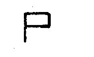 |
Фонарем с белым светом - серия точек
|
|
2 |
Сбор командиров (начальников) |
Поднять правую руку вверх и кружить ею над головой, после чего руку резко опустить |
То же, с красным и желтым флажками в правой руке 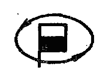
|
Фонарем с белым светом размахивать над головой вправо и влево, описывая полукруги 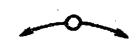 |
|
3 |
К машинам |
Поднять обе руки вверх и держать до исполнения |
То же, имея в правой руке желтый, а в левой красный флажок 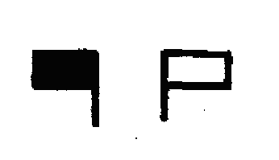 |
Фонарем с белым светом размахивать перед собой вправо и влево на уровне плеча
|
|
4 |
По местам |
Поднять обе руки вверх и резко опустить вниз через стороны |
То же, имея в правой руке желтый, а в левой красный флажок 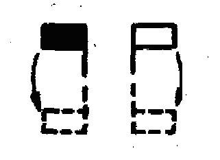
|
Фонарем с белым светом размахивать по вертикали вверх и вниз 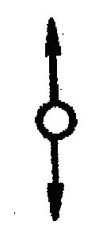 |
|
5 |
Заводи |
Правой рукой вращать впереди себя |
То же, имея в правой руке желтый флажок 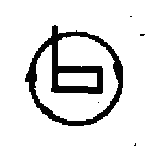
|
Фонарем с белым светом вращать впереди себя 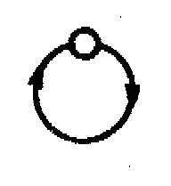 |
|
6 |
Глуши двигатель |
Размахивать перед собой обеми опущенными руками |
То же, имея в правой - руке желтый, а в левой красный флажок 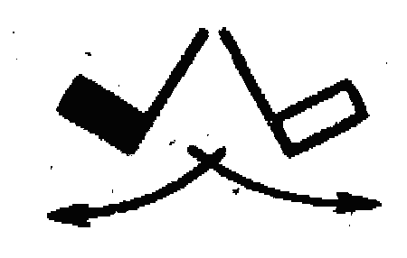
|
Фонарем с красным светом, опущенным вниз, размахивать перед собой, описывая полукруг 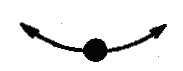 |
|
7 |
Марш (вперед, продолжать движение в прежнем или новом направлении, путь свободен) |
Поднять правую руку вверх, повернуться в сторону движения и опустить руку в направлении движения на уровне плеча |
То же, с желтым флажком в правой руке 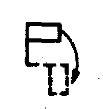
|
Фонарем с зеленым светом размахивать по вертикали вверх и вниз 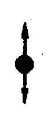 |
|
8 |
Увеличить дистанцию |
Поднять левую руку вверх, а правую вытянуть горизонтально в сторону и размахивать ею вниз и вверх до уровня плеча |
То же, имея в правой руке желтый, а в левой красный флажок
|
Фонарем с зеленым светом размахивать в вертикальной плоскости, описывая восьмерку 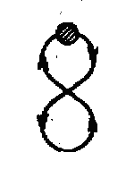 |
|
9 |
Уменьшить дистанцию |
Поднять правую руку вверх, а левую вытянуть горизонтально в сторону и размахивать ею вниз и вверх до уровня плеча |
То же, имея в правой руке желтый, а в левой красный флажок 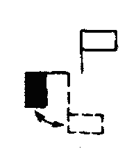
|
Фонарем с красным светом размахивать в вертикальной плоскости, описывая восьмерку 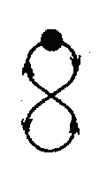 |
|
10 |
Стой (стоп) |
Поднять левую руку в вверх и быстро спустить вниз перед собой, повторяя до исполнения |
То же, с красным флажком в левой руке 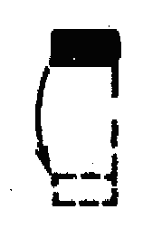
|
Фонарем с красным светом размахивать по вертикали вверх и вниз 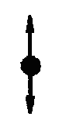 |
|
11 |
В линию машин |
Вытянуть обе руки горизонтально в сторону и держать до отзыва |
То же, имея в правой руке желтый, а в левой красный флажок 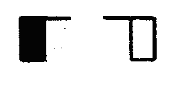
|
Фонарем с зеленым светом размахивать перед собой вправо и влево на уровне плеча
|
|
12 |
В линию колонн |
В линию взводных колонн: поднять обе руки вверх и размахивать ими накрест над головой |
То же, имея в правой руке желтый, а в левой красный флажок 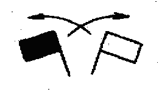
|
Фонарем с зеленым светом размахивать над головой вправо и влево, описывая полукруг 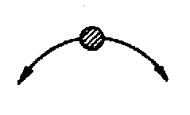 |
|
В линию ротных колонн: поднять обе руки вверх, сложить их накрест над головой и держать неподвижно |
То же, имея в правой руке желтый, а в левой красный флажок 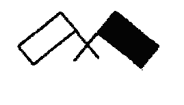
|
Фонарем с зеленым светом размахивать над головой вправо, описывая полукруг. Возвращение фонаря в первоначальное положение производить при полупотушенном или скрытом от принимающего свете 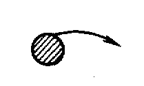
|
||
|
13 |
В колонну |
Поднять правую руку вверх и опустить ее, держа предплечье вертикально (повторять до отзыва) |
То же, с желтым флажком в правой руке 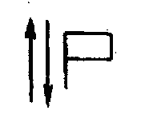
|
Фонарь с зеленым светом вначале держать неподвижно, а затем сигнал «Марш» повторять до отзыва 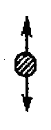 |
|
14 |
Все кругом |
Вытянуть левую руку горизонтально в сторону, а правую поднять вверх и кружить над головой |
То же, имея в правой руке желтый, а в левой красный флажок 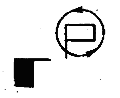
|
Фонарем с зеленым светом вращать впереди себя 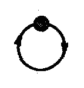 |
|
15 |
Все направо (налево) |
Вытянуть левую руку горизонтально в сторону, а правую руку поднять вверх, повернуться в сторону поворота и размахивать правой рукой вверх и вниз до уровня плеча (повторять до отзыва) |
То же, имея в правой руке желтый, а в левой красный флажок 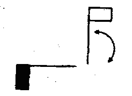
|
Фонарем с зеленым светом размахивать по вертикали сверху вниз и в сторону поворота 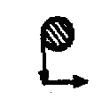
|
|
16 |
Авария (вынужденная остановка) |
Вытянуть правую руку горизонтально в сторону, а левую поднять вверх и размахивать ею над головой вправо и влево |
То же, имея в правой руке желтый, а в левой красный флажок. После подачи сигнала красный флажок устанавливается на машине под углом 45° 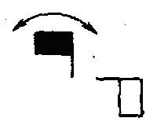 |
Фонарем с красным светом размахивать перед собой вправо и влево на уровне плеча 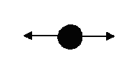
|

Примечания: 1.В таблице сигналов обозначены:
|
флажок желтого (белого) цвета |
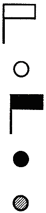 |
|
фонарь с белым светом |
|
|
флажок красного цвета |
|
|
фонарь с красным светом |
|
|
фонарь с зеленым светом |
При управлении подразделениями (подчиненными) сигналами необходимо помнить, что сигнальные средства демаскируют местонахождение командира
Команды должны подаваться громким голосом. Все приказы должны передаваться по цепочке. Командир подразделения должен помнить следующее:
- думай, прежде чем сказать;
- выстраивай сообщение в логическом порядке;
- говори громко и четко;
- отдавай приказание по частям и делай паузы для его передачи.
Передача команд световыми сигналами. Для указания позиций противника могут использоваться как малогабаритные стреляющие приспособления, так и обычные сигнальные ракеты. Но при этом необходимо помнить, что это также выдает противнику положение командира, который для него является главной целью. Подавать сигнал должен назначенный солдат. Указанные сигналы могут использоваться для подачи команды на прекращение огня.
Передача команд свистком. Это наиболее важное средство для подачи и выполнения команд. Свисток используется для подачи сигнала о следовании команды, о начале ее выполнения или о прекращении предыдущего действия и выполнения новой команды, а также для привлечения к себе внимания подчиненных. Свисток и голос являются наиболее важными способами управления и единственными, которые эффективны в бою.
Порядок подачи команд свистком:
- командир дает свисток – привлекает к себе внимание подчиненных; личный состав ожидает очередной команды и продолжает ведение огня;
- командир подает команду в сочетании с жестом;
- военнослужащие передают полученную команду по цепочке;
- командир дает свисток для обозначения начала выполнения команды;
- в течение нескольких секунд (рекомендуется 3-х) весь личный состав подразделения ведет плотный огонь по противнику и после этого начинает выполнение поставленной задачи.
Например, перед свистком могут подаваться следующие команды:
- для движения вперед: «Взвод (отделение). В направлении отдельного дерева, по «двойкам», перебежками, ВПЕРЕД»;
- для отхода назад: «Подготовиться к отходу» Это команда, как и команда «Подготовиться к атаке» сопровождается словом «подготовиться». Это связано с тем, что каждый военнослужащий должен подготовить дымовую гранату, а затем бросить ее по свистку для создания дымовой завесы;
- и другие.
Подача команд в бою должна сопровождаться подачей сигналов жестами. В отличие от уставных сигналов управления строем, единых сигналов управления жестами в бою нет, поэтому можно воспользоваться нижеперечисленными сигналами. Эти сигналы хороши тем, что они могут применяться для управления подразделением на большом расстоянии, при условии маскировки от наблюдения противником.
Порядок передачи сигналов, команд и постановки задач жестами. Тренировка в выполнении сигналов и команд, подаваемых днем и ночью
Сигналы жестами (вариант)
|
Сигнал (команда) |
Порядок подачи жестом |
|
1. Для развертывания группы в цепь |
несколько раз развести обе руки в стороны |
|
2. Для того чтобы медленно и бесшумно разойтись |
медленно согнуть руки в локтях и медленно развести их в стороны вниз с разжиманием пальцев обеих рук |
|
3. Для того чтобы подразделение быстро разбежалось |
резко развести руки в стороны вниз |
|
4. Ложись |
поднять согнутую в локте руку до подбородка и быстро опустить ее ладонью вниз |
|
5. Внимание |
поднять руку вверх на высоту головы |
|
6. Ко мне |
поднять руку вверх, сделать круговые движения над головой и энергично опустить ее вниз |
|
7. Для передвижения вперед, назад, в стороны |
поднять руку на высоту головы и опустить ее до высоты плеча, указывая желаемое направление |
|
8. Вижу противника |
вытянуть руку горизонтально в сторону и держать так до отказа |
|
9. Вижу, слышу (отзыв) |
поднять обе руки вверх на высоту головы и опустить их |
|
10. Бесшумно подползти к противнику |
левой рукой указать направление, а ладонью правой сделать несколько зигзагообразных движений |
|
11. Оглушить противника и связать |
обозначить удар левым кулаком по челюсти или по голове, правой рукой произвести 2-3 раза круговое движение вокруг левой |
|
12. Условные знаки: уничтожить противника ножом, заглянуть в окно, окружить дом, пропустить противника, залезть на дерево и т.п. |
показывать резкими выразительными движениями руки (или обеих рук). Такую тренировку проводить следующим методом: командир показывает действие жестом и спрашивает обучающихся, правильно ли они поняли жест. После усвоения знаков можно выполнять нужные действия. |
|
13. При действиях ночью бесшумные построения, перестроения, движения производятся по заранее изученным сигнальным жестам, по прикосновениям руки к плечу, груди, спине, головному убору, а также по легким толчкам рукой о тело |
|
Как вариант в каждом подразделении могут разрабатываться и использоваться свои сигналы жестами, которые можно позаимствовать, например, из следующей таблицы.
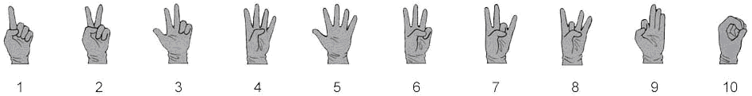Цифры
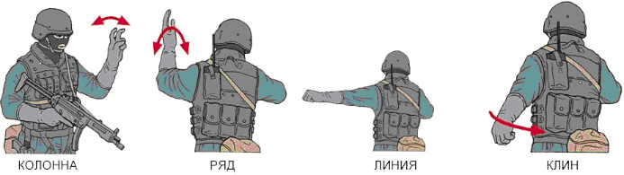Построения
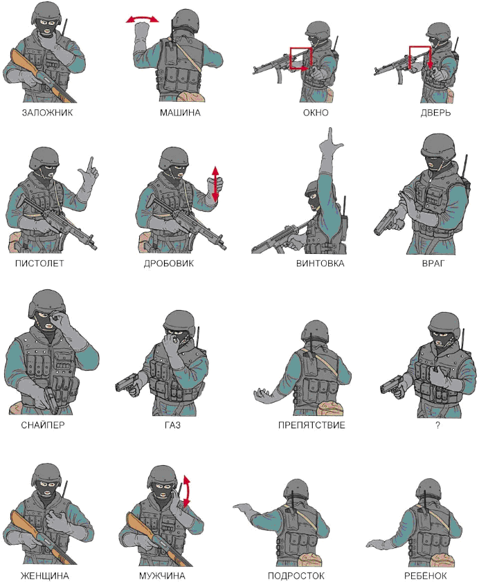Обозначения
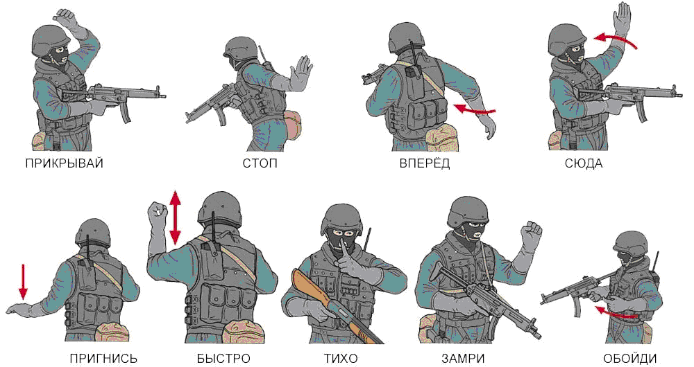Приказы
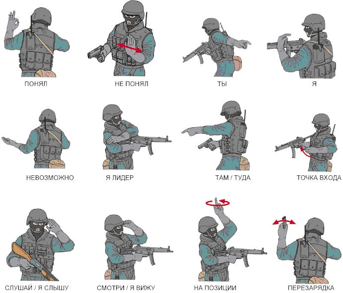Оповещения
Методические особенности изучения языка жестов. Изучение жестов, т.е. сами жесты и что они означают, начинается с того, что командир показывает определенный набор жестов и объясняет назначение каждого из них. Затем предлагает для показа жестами фразу и показывает ее жестами в связке. Во время показа фразы жестами на первоначальном этапе обучения он дублирует ее значение вслух голосом.
К примеру, командир хотите продвинуться немного вперед и просите находящегося рядом стрелка прикрыть его. В слух фраза звучит так: Я - Двигаюсь Туда - Ты - Меня - Прикрой. Жестами: Я (указывается на себя) - Двигаюсь Туда (указывается направление) - Ты (указывается на него) - Меня (указывается на себя) - Прикрой (показываем жест прикрытия).
Каждый из этих жестов должен быть четко показан обучаемым, т.е. при указании направления своего движения нужно сделать несколько амплитудных махов предплечьем, и чтоб кисть ходила по направлению предполагаемого движения. Военнослужащий, которому предназначена эта фраза, должен это все прочитать. При этом необходимо жестикулировать таким образом, чтоб наблюдающие видели границу между «словами». Другими словами - надо «говорить» быстро, но четко, разделяя фразу на составные части. Если военнослужащий понял «сказанное» ему, то он подтверждает это знаком - «понял».
При общении необходимо учитывать расстояние от командира до подчиненного. Если они находится рядом друг с другом, то при подаче сигнала не стоит, например, высоко поднимать руку, чтоб дать команду. Это можно сделать и на уровне лица или даже груди.
Находясь, например, в здании или в лесу на условно среднем и дальнем расстояниях, перед подачей сигнала командир должен сначала обратить на себя внимание, и только после этого начинать командовать.
Варианты фраз для тренировки:
- Я - Двигаюсь Туда - Ты - Меня – Прикрой;
- Ты - Посмотри – Туда;
- Ты - Ты - Двигайтесь – Туда;
- Я - Ты - Ты - Двигаемся - Туда - Ты - Ты – Прикройте;
- Там – Снайпер;
- Внимание - Туда - Трое - Один - Два - Три – Вперёд;
- Там - Два – Противника.
Сигналы оповещения, применяемые при подготовке и в ходе боя, порядок их подачи различными способами. Тренировка в выполнении сигналов, подаваемых днем и ночью
Оповещение личного состава о воздушном противнике, непосредственной угрозе и начале применения противником оружия массового поражения, а также о радиоактивном, химическом и биологическом заражении осуществляется едиными и постоянно действующими сигналами.
|
Сигнал |
Порядок доведения сигналов |
||
|
По средствам связи, голосом |
По техническим средствам |
Подручными |
|
|
1. Оповещение о ракетной или авиационной опасности |
|||
|
«Воздушная тревога» |
«Внимание»! «Воздушная тревога! Воздушная тревога»! |
Сирена: «протяжный гудок» |
Частые удары в рынду или непрерывный сигнал автомобиля в течение 0,5 - 1 мин. |
Действия личного состава:
- немедленно занимает убежище, окоп, траншею или любое имеющееся укрытие.
|
Сигнал |
Порядок доведения сигналов |
||
|
По средствам связи, голосом |
По техническим средствам |
Подручными |
|
|
2. О непосредственной угрозе или обнаружении радиоактивного заражения |
|||
|
«Радиационная опасность» |
«Внимание»! «Радиационная опасность! Радиационная опасность»! |
Сирена: «серия коротких гудков» |
Редкие удары в рынду или прерывистые гудки сигнала автомобиля. |
Действия личного состава:
- на открытой местности, не прекращая выполнения поставленной задачи, немедленно надевает респираторы (противогазы) и средства защиты кожи;
- в закрытых машинах, укрытиях и помещениях, необорудованных фильтровентиляцией - только респираторы (противогазы).
Районы радиоактивного заражения на машинах преодолеваются на максимальных скоростях и увеличенных дистанциях. Водители надевают респиратор (противогаз) при короткой остановке.
|
Сигнал |
Порядок доведения сигналов |
||
|
По средствам связи, голосом |
По техническим средствам |
Подручными |
|
|
3. Оповещение об угрозе или обнаружении химического (биологического) заражения |
|||
|
«Химическая тревога» |
«Внимание»! «Химическая тревога! Химическая тревога»! |
40 мм. реактивный патрон СХТ-40. |
Редкие удары в рынду или прерывистые гудки сигнала автомобиля. |
Действия личного состава:
- на открытой местности, не прекращая выполнения поставленной задачи, немедленно надевает противогаз и средства защиты кожи;
- в закрытых машинах, укрытиях и помещениях, необорудованных фильтровентиляцией - только противогазы. Водитель надевает противогаз на короткой остановке.
Сигналы оповещения должен знать весь личный состав подразделения. Командир заблаговременно определяет порядок действия подчиненных по сигналам оповещения и при их полутени подает соответствующие команды.
По сигналу оповещения о радиоактивном, химическом и бактериальном заражении, поданному во время совершения марша, движение не прекращается. Каждый водитель соблюдает свое место в колонне и установленные скорость и дистанцию. Стекла кабин, люки, жалюзи закрываются. Личный состав при нахождении в крытом автомобиле или бронетранспортере, водители по сигналу оповещения надевают противогазы (водители колесных машин надевают противогазы при короткой остановке, а водители гусеничных машин - в движении на пониженных скоростях). При нахождении на открытых машинах личный состав, кроме того, надевает защитные плащи.
В ходе, наступления по сигналу оповещения о радиоактивном, химическом и бактериальном заражении личный состав немедленно надевает противогазы и другие средства защиты и продолжает выполнять боевую задачу. Средства защиты кожи используются в зависимости от вида заражения, метеорологических условий и способа передвижения.
В обороне с получением сигнала о непосредственной угрозе применения противником ядерного оружия (при нанесении противником ядерного удара) весь личный состав занимает укрытия, а при применении противником химического оружия немедленно надевает средства индивидуальной зашиты (в танках, боевых машинах пехоты включаются системы коллективной зашиты).
Наблюдатели и дежурные расчеты по сигналу оповещения надевают противогазы и средства защиты кожи и, оставаясь на своих местах, продолжают выполнять боевую задачу.
Сигнал оповещения об окончании радиоактивного, химического бактериального заражения не устанавливается. Индивидуальные средства защиты снимаются по команде командира подразделения после того, как с помощью приборов будет установлено отсутствие опасности поражения личного состава. При преждевременном снятии средств защиты, особенно в случаях применения противником высокотоксичных ОВ, возможно поражение в результате десорбции (выделения в атмосферу) отравляющих веществ с обмундирования и снаряжения.
Тема 3. Действия военнослужащего в бою. Подготовка обороны. Действия при отражении атаки противника.
Выбор места для стрельбы с учетом маскирующих и защитных свойств местности, а также местных предметов; его оборудование и маскировка.
1. Выбор места для стрельбы с учетом маскирующих и защитных свойств местности, а также местных предметов
Огневая позиция (место для стрельбы) должна быть удобной, обеспечивать широкий обзор и обстрел, укрывать огневое средство (стрелка) от наблюдения противника, исключать наличие в секторе стрельбы мертвых пространств и обеспечивать проведение маневра. После производства нескольких выстрелов (очередей) с одной огневой позиции (места для стрельбы) в целях воспрещения ведения противником прицельного огня и его обмана производится ее смена.
Для успешных действий на поле боя солдат должен уметь правильно выбирать место для стрельбы. При его выборе широко используются воронки, канавы, насыпи и другие местные предметы. Если перед выбранным местом есть кусты, кочки, высокая трава п т. п. и они мешают наблюдению и стрельбе, то их следует убрать или сменить место.
При выборе места для стрельбы необходимо учитывать защитные и маскирующие свойства местности. Место для окопа необходимо выбирать так, чтобы иметь хороший обзор и обстрел в заданном секторе и не быть заметным для противника. В то же время расположение окопов зависит от поставленной подразделению боевой задачи и условий местности.
Место расположения окопов должно удовлетворять следующим основным условиям:
- допускать хороший обзор и обстрел впереди лежащей местности на дистанцию не менее 400 м, обзор и обстрел подступов к соседним окопам;
- способствовать маскировке окопа, благодаря чему значительно уменьшается эффективность огня противника;
- обеспечивать возможно более скрытое сообщение с тылом и с соседними окопами;
- благоприятствовать производству работ по устройству и оборудованию окопа.
Под хорошим обстрелом подразумевается отсутствие мертвых (необстреливаемых) пространств в пределах сектора обстрела.
Наилучший обзор и обстрел подступов к позиции дает расположение окопа на скате холма, обращенного в сторону противника. При расположении окопа у подошвы ската обеспечивается настильность огня, при которой цели поражаются на всем протяжении полета пули.
Расположение окопа у топографического гребня обычно открывает обзор на дальние расстояния, но обстрел без мертвых пространств, как правило, возможен лишь на самые короткие дистанции.
С точки зрения обстрела наиболее удобным местом расположения окопа считается боевой гребень. Боевым гребнем называется линия на переднем (обращенном в сторону противника) скате возвышенности, с которого возможен обстрел до подошвы ската без мертвых пространств.
Запрещается выбирать и занимать огневую позицию (место для стрельбы) на гребнях высот (пригорков, холмов), перед местными предметами, на фоне которых будет отчетливо виден силуэт стреляющего.
2. Оборудование одиночного окопа
Для ведения огня, наблюдения и защиты от средств поражения личный состав на занимаемых позициях устраивает сначала одиночные окопы для стрельбы лежа, затем углубляет их для стрельбы с колена и стоя.
Перед отрывкой окопа каждый солдат применяется к местности, располагаясь так, чтобы иметь хороший обзор и обстрел в заданном секторе и не быть заметным противнику. Затем он отрывает одиночный окоп для стрельбы лежа и расчищает себе обзор и обстрел, если ему мешают местные предметы.
Одиночный окоп для стрельбы лежа.
Одиночный окоп представляет собой выемку с насыпью впереди и с боков, обеспечивающую удобное размещение оружия и солдата при ведении огня и защиту от средств поражения противника. В одиночном окопе для стрельбы лежа выемка делается шириной 60 см, длиной 170 см и глубиной 30 см, чтобы солдат в ней был полностью скрыт.
Для удобства стрельбы в передней части выемки оставляется порожек шириной 25-30 см на 10 см выше дна окопа, обеспечивающий опору для локтей. Вынутая при отрывке земля выбрасывается вперед (в сторону противника) и образует насыпь, которая называется бруствером.
При ведении огня из окопа в сторону одного из флангов, высота бруствера окопа со стороны противника (с фронта) делается на 20 см больше, чем в секторе обстрела. Объем вынутого грунта 0,3 м3. На устройство требуется 0,5 чел. час.
Отрывка одиночного окопа для стрельбы лежа под огнем противника выполняется так:
- лежа на выбранном месте, солдат кладет автомат справа от себя на расстояние вытянутой руки дулом к противнику;
- повернувшись на левый бок, вытягивает левой рукой за лоток лопату из чехла, обхватывает черенок двумя руками и ударами на себя подрезает дерн или верхний уплотненный слой земли, обозначая спереди и с боков границы выемки;
- после этого перехватывает лопату и ударами от себя отворачивает дерн, кладет его спереди и приступает к отрывке.
Во время работы следует:
- лопату врезать в землю углом лотка не отвесно, а наискось;
- тонкие корни перерубать острым краем лопаты;
- для образования бруствера дерн и землю выбрасывать вперед в сторону противника, оставляя между краем выемки и бруствером небольшую площадку, называемую бермой, шириной 20–40 см;
- голову держать ближе к земле, не прекращая наблюдения за противником.
Когда в передней части выемки окопа будет достигнута необходимая глубина, солдат, отодвинувшись назад, продолжает отрывку выемки до требуемой длины, чтобы укрыть туловище и ноги.
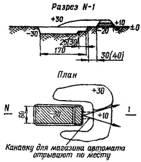Одиночный окоп для стрельбы из автомата лежа
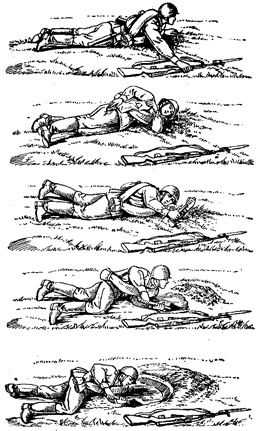
Отрывка одиночного окопа под огнем противника
По окончании отрывки бруствер разравнивается лопатой и маскируется под вид и цвет местности подручным материалом: травой, ветками, пахотной землей и т. п.
Каждый солдат, не ожидая приказаний командира, углубляет окоп для стрельбы лежа, создавая одиночный окоп для стрельбы с колена, а затем для стрельбы стоя на дне рва.
Одиночный окоп для стрельбы с колена и стоя.
Одиночный окоп для стрельбы с колена и стоя устраивается путем доотрывки в глубину одиночного окопа для стрельбы лежа соответственно до 60 см и 110 см. При отрывке окопа грунт выбрасывается вперед и в стороны, создавая бруствер высотой 40–60 см. В секторе обстрела высота бруствера уменьшается до 30 см, образуя выемку с пологими скатами – открытую бойницу.
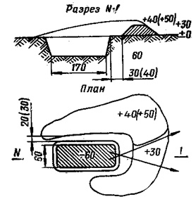Одиночный окоп для стрельбы из автомата с колена
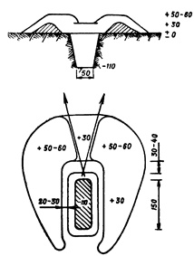
Одиночный окоп для стрельбы из автомата стоя
Объем вынутого грунта при оборудовании одиночного окопа для стрельбы из автомата с колена 0,8м3; на устройство требуется 1,2 чел. час. Объем вынутого грунта при оборудовании одиночного окопа для стрельбы из автомата стоя 1,4 м3; на устройство этого окопа требуется 1,5 чел. час.
Одиночный окоп для стрельбы стоя на дне рва в полтора раза снижает радиус зоны поражения при воздействии атомного оружия по сравнению с размещением на открытой местности.
Окопы от воздушного наблюдения маскируются маскировочным полотном с вплетением в нее травы, веток и другого подручного материала.
3. Маскировка окопов
Маскировка окопов обычно достигается искусным расположением их на местности. Окоп хорошо и легко маскируется при расположении его в кустарнике, в высокой траве, в местах, плохо видимых противнику и не просматриваемых с его наземных наблюдательных пунктов. Окоп, оборудованный в инженерном отношении, значительно легче скрыть, если он расположены с учетом рельефа и рисунка местности, следуя изгибам и неровностям рельефа, а также вдоль межей, канав и дорог.
Однако, добиваясь совершенствования маскировки окопа, нужно стремиться к тому, чтобы не усложнялись условия выполнения поставленной огневой задачи, не ухудшался обстрел местности в заданной полосе.
Один из основных способов маскировки окопов - одернование. При нехватке дерна для маскировки брустверов дополнительную заготовку его производят в стороне или в тылу от окопа и подносят на носилках к месту работ. Заготовлять дерн лучше в тех местах, где намечена постройка ложных окопов. Площадь, с которой снимается дерн, по своей форме и размерам должна быть похожа на обычный окоп.
Необходимо особо отметить, что попытки скрытия бруствера окопа наброской на него срезанной растительности малоэффективна, так как в этих условиях необходимые результаты может дать только материал, хорошо имитирующий травостой. А этому не соответствует ни срезанная и наброшенная на бруствер трава, ни срезанные ветки кустов и деревьев, резко отличные по яркости от травяного покрова.
Кроме задернования, хорошо скрывают поверхности брустверов лишь искусственные маски, цвет и фактура которых соответствуют фону травяного покрова.
На фоне пашни бруствер маскируется обсыпкой его верхним слоем земли и имитацией на нем борозд, вписанных в общий рисунок фона пашни. Обязательным условием при этом является восстановление на участке, где осуществляется скрытие окопа, фона пашни, нарушенного при выполнении инженерных работ.
На однообразных фонах песка или снега бруствер обсыпают песком или снегом.
В качестве покрытий искусственных масок на фоне травяного покрова наиболее целесообразно применять сети с прикрепленным или вплетенным в них искусственным маскировочным материалом (пучки мочала, куски полихлорвиниловой пленки, ленты ткани или специальной маскировочной бумаги и т. д.). При этом предпочтение следует отдавать сетчатой ткани, обеспечивающей лучшую вентиляцию и проникание дневного света в окоп.